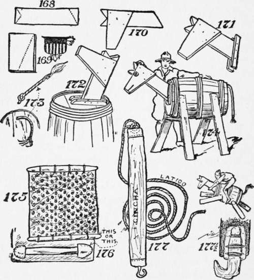

Make Your Own Aparejo
Description
This section is from the book "The Book Of Camp-Lore And Woodcraft", by Dan Beard. Also available from Amazon: The Book of Camp-Lore and Woodcraft.
Make Your Own Aparejo
Make your own aparejo of anything you can find. The real ones are made of leather, but at the present time, 1920, leather is very expensive. We can, however, no doubt secure some builders' paper, tar paper, stiff wrapping paper, a piece of old oilcloth, which, by the way, would be more like leather than anything else, and cover these things with a piece of tent cloth, a piece of carpet, or even burlap. The oilcloth inside will stiffen the aparejo. At the bottom edge of it we can lash a couple of sticks (Fig. 175), or if we want to do it in a real workmanlike manner, we can sew on a couple of leather shoes, made out of old shoe leather or new leather if we can secure it, and then slip a nice hickory stick through the shoes, as shown in the diagram (Fig. 176).
The aparejo is to throw over the horse's back as in Fig. 178,but in order to fasten it on the back we must have a latigo which is the real wild and woolly name for the rope attached to a cincha strap (Fig. 177). But when you are talking about packing the pack horses call it "cinch," and spell it "cincha." Make your cincha of a piece of canvas, and in one end fasten a hook—a big strong picture hook will do; Fig. 177 1/2 shows a cinch hook made of an oak elbow invented by Stewart Edward White, and in the other end an iron ring; to the iron ring fasten the lash rope (Fig. 177).
For the real horse and outfit one will need an aparejo, a pack blanket, a lash rope with a cincha, a sling rope, a blind for the horse, and a pack cover. But here again do not call it a pack cover, for that will at once stamp you as a tenderfoot. Assume the superior air of a real plainsman and speak of it as a "manta." The aparejo and pack saddle are inventions of the Arabians away back in the eighth century. When the Moors from Africa overran Spain, these picturesque marauders brought with them pack mules, pack saddles, and aparejos. When General Cortez and Pizarro carried the torch and sword through Mexico in their search for gold, they brought with them pack animals, pack saddles, aparejos, latigos, and all that sort of thing with which to pack their loot.
When the forty-niners went to California in search of gold they found that the Arabian Moorish-Spanish-Mexican method of packing animals was perfectly adapted to their purposes and they used to pack animals, the aparejos, the latigos, and all the other kinds of gos. The lash rope for a real pack horse should be of the best Manila 1/2 inch or 5/8 inch, and forty feet long; a much shorter one will answer for the wooden horse.
Continue to: